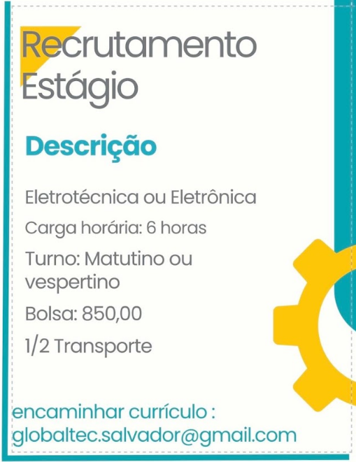
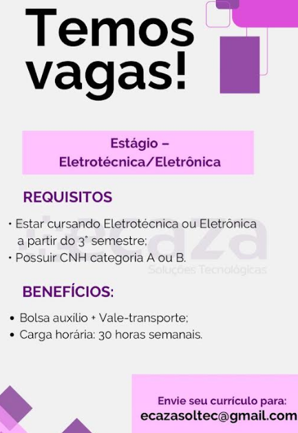

Oportunidades de estágio
As vagas abaixo chegaram à coordenação por e-mail das próprias empresas. A coordenação divulga; ela não seleciona, não encaminha currículo e não intermedeia a contratação.
Antes de se candidatar, confira se você já pode estagiar.
A norma libera o estágio a partir da metade do curso, e o Projeto Pedagógico
do Integrado pede a matrícula no 3º ano. Veja
quando você já pode estagiar.
-
Estágio em Eletrotécnica ou Eletrônica
Globaltec
- Carga horária: 6 horas por dia
- Turno: matutino ou vespertino
- Bolsa de R$ 850,00, com meio vale-transporte
Como se candidatar. Envie o currículo para o endereço que está no cartaz.
Recebida em 11/09/2026.

Toque no cartaz para ampliar. -
Estágio em Eletrotécnica ou Eletrônica
E-Caza Soluções Tecnológicas
- Exige matrícula a partir do 3º semestre
- Exige CNH categoria A ou B
- Bolsa auxílio e vale-transporte
- Carga horária: 30 horas semanais
Como se candidatar. Envie o currículo para o endereço que está no cartaz.
Recebida em 11/09/2026.

Toque no cartaz para ampliar.
{kind=link}
{kind=link}
Você é de uma empresa e quer divulgar uma vaga?
Envie o cartaz da vaga à coordenação do curso. Peça que ele traga o contato da empresa, e não o telefone pessoal de quem recruta: esta página é aberta, e os buscadores guardam o que ela mostra.